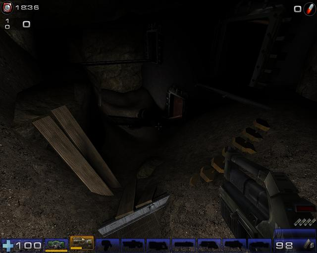

Braagh
The Name
"braagh" started as random gibberish after flicking the analog stick around and mashing on the 'X' button. I've become attached to the name as it is easy to remember and I have never tried to sign up for something and have say "You can't be that name because it already exists," or something like that.
Oh yeah, it's pronounced brawg, not brag. Most people can't pronounce "aa" and it can get annoying.
Me
I am 15 years old, and I am a noob. I have been working with UEd for about a year, and have been jumping from level concept to concept as I taught myself as much as I could in that time. I find new stuff, and forget old stuff, almost constantly. I am just beginning to teach myself Unreal Script and Maya(and I have a good source).
At the moment, you won't find me anywhere else really. My good computer isn't connected to the internet, making it hard to play games or anything. I finally bought the router last week, but now I need 75ft (!) of cable.
My Work
I have a large number of unreleased maps, you know, blobs of pixels and polygons that kind of look like something and are kind of fun. I've just begun (if by just I mean three months of work filled with crashes, unfixable errors, staying up way to late, and forgetting to eat) working on a level I call "Combustion".
Here are some example pictures:
Main room. 
Side room. Other side room. |
The concept is a reasearch/mining facility that was closed after the location became unstable. There are frequent tremors, and lava has seeped into the main facility.
What's Been Done
This level actually began in June of 2006. I had two weeks of summer break before I was going to work, and in that time I wanted to do as much as I could on the computer, and on video games in general. I created a simple CTF map called "CTF-Combustion." It was the first map I finalized, though all it was was a simple two base map with four bridges in between, all of which were above the deadly lava pit in the center. Basically it was the first picture up above, without the terrain, or any of the interesting meshes.
After my job started(it was my first), I began to play around with the Hammer editor for Half-Life 2. I found that it didn't provide enough variety for textures and things, and even simple tasks took far more time than in UEd. I also knew that the new engine was going to be coming out, so I decided at the end of summer that I would begin mapping in UEd again.
I played with a few ideas, though most of them were eliminated or postponed due to either my inability or realizing that pulling of the concept would take an absurd amount of time.
Resurrection
At the end of October I decided to resurrect Combustion as a new map, with better, well, everything. I worked and worked for a few weeks, and it began to look like what I wanted.
Disaster
Then, disaster struck. Just like it always does. Over Christmas break my level decided to, as I call it, "eat itself". Basically, the UEd goblin wiped my map, and I had forgot to backup the map. Yeah... I was kind of annoyed.
So I decided, well I'll work on a different map. I basically built a bunch of BSP and then decided that I didn't like the concept anymore.
Then, after that short break I began again. The restart was very quick, and it looked slightly better. Finally, I got to the point where I was adding static meshes to the map, when I realized that the way the map was going there was no way I would be able to balance the map completely for good gamepley. About the same time, I realized that I had a rectangular layer on the terrain, and it would crash every time I would edit the terrain. So, in turn I decided to change the map design to a DM rather than a CTF. This was around The beginning of February.
Since then I have heavily altered the bulk of the design, finally added a number of static meshes, and began to iron out certain problems.
To Do
There is alot to do on this level. The lighting is all test lighting(in fact these pictures were taken on a level I am using to test projectors), and most of it was just stuck in so I could at least kind of see where I was going. If you look at the third you can see a floating lantern that I am using to test the way I want it to move.
Obviously I'm going to need to test. A lot. And I'm going to need a lot of blocking volumes.
I am planning to add a new weapon. This will teach me quite a few things, and it will provide me with a more suitable hidden weapon for this level. The super weapons would be far to hard to use in this level design, so instead I am going to create a close quarters super weapon (similar to the flak cannon, but much more powerful, and a bit more destructive). I may be looking for help with this...
Update 1
Yay, I got more done on Combustion. It's looking a lot better(it's looking more like what I intended at least). Here's new screenshots:
Sorry about the goofy sizing. (My time is limited and I had to do it by hand.)
HELP!!!
But, I need help. Please. I don't think I can find these in the wiki, and I don't have time to wander around on the internet right now(school projects are attacking).
Sorry about the goofy sizing. (My time is limited and I had to do it by hand.)
This shouldn't look like this. It should look like this. |
The texture that acts strangely in the editor, until I click on it once, then it appears fine in the editor. Once I start the level it shrinks and appears very strangely. The texture is a material switcher that switches between a transparent texture oscillator and an opaque texture oscillator. Is there a way to fix this, or should I just try another method?
The Wiki
I want to help with this project. There are areas that are seriously lacking, and others which just don't make sense. I will probably see if I can help with projectors(as that's what I'm playing with at the moment), and anything else I see that I could be helpful with. I'm happy to join the community.
I've started to piece together a tutorial about projectors;
Braagh's Projector Happy Fun Time
braagh: Hello!
Tarquin: Hello! Welcome to the wiki. Those screenshots look pretty good